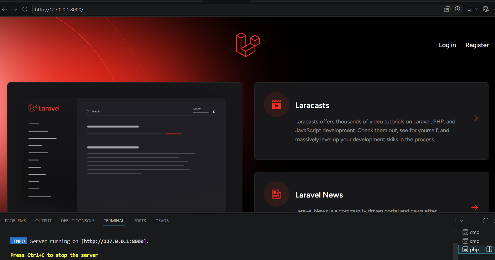
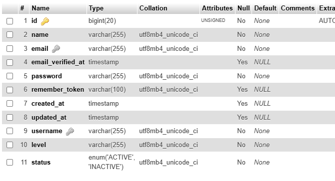
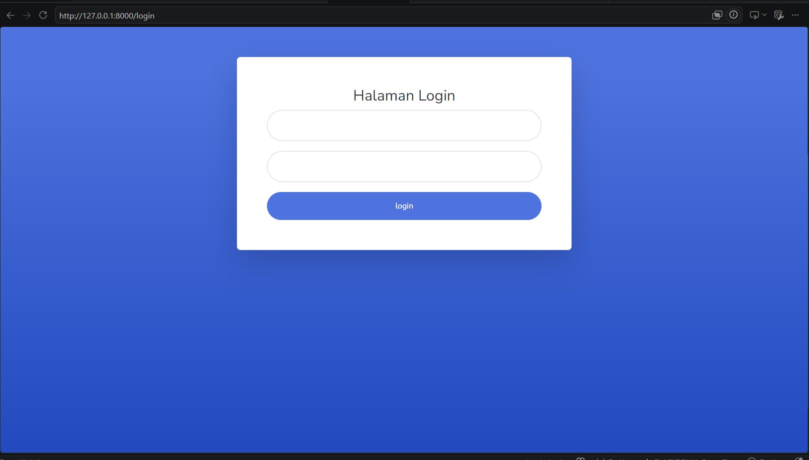
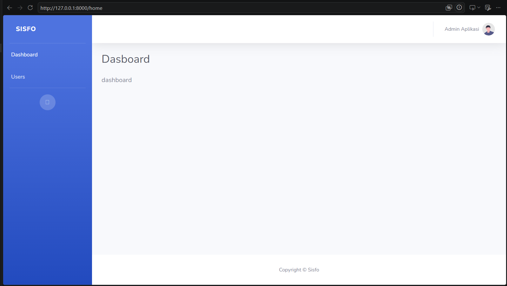
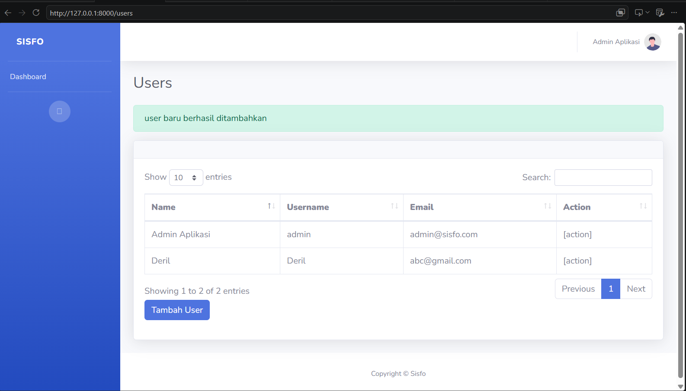
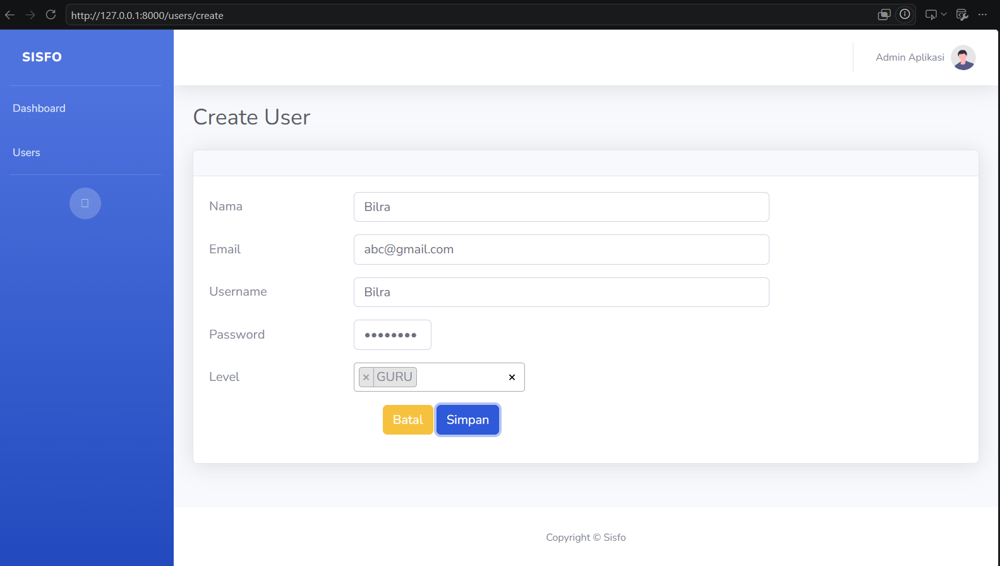
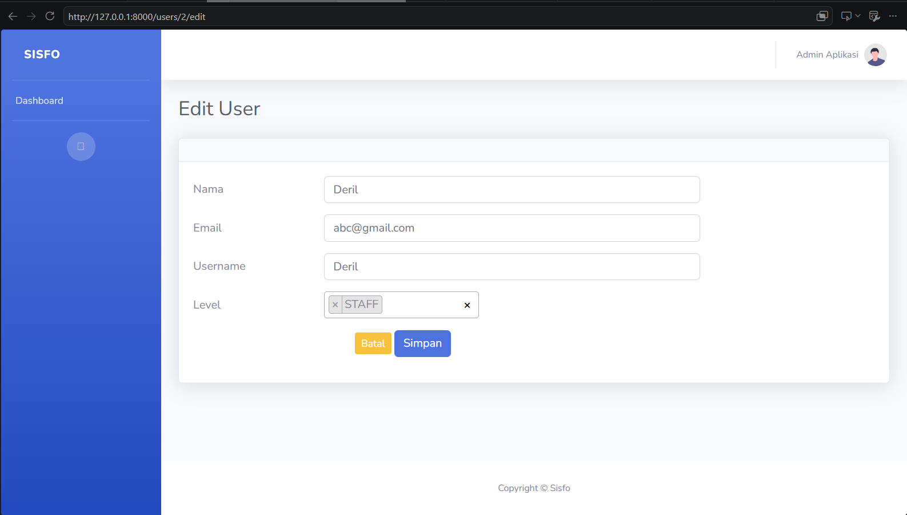
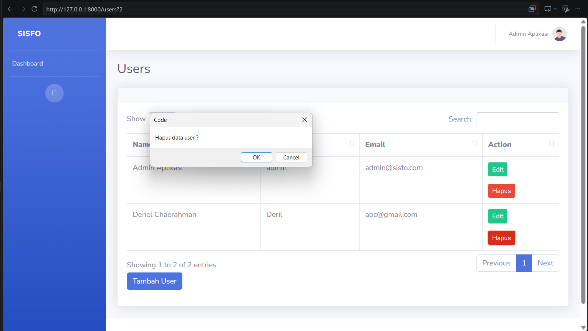
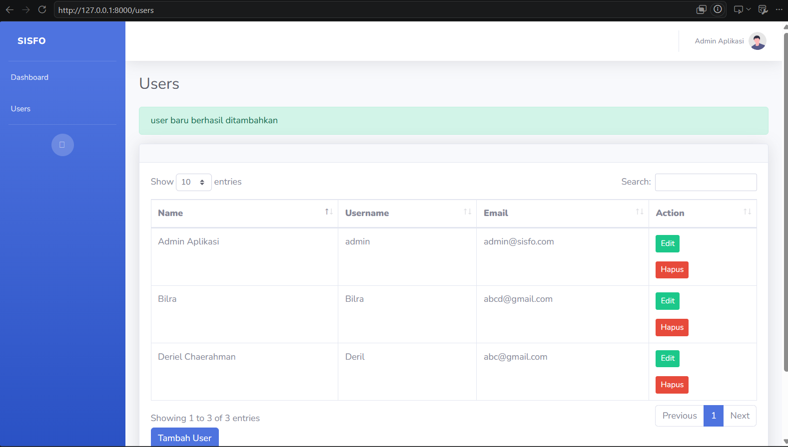

Studi Kasus Sistem Informasi Sekolah (SISFO)
Dibuat : 20 Juni 2026
Repository GitHubMemahami dan mampu membangun aplikasi web berbasis framework Laravel 9 dengan studi kasus Sistem Informasi Sekolah (SISFO).
laravel/ui.
users dengan menambahkan kolom
username, level, dan status.
@extends, @section, @yield,
@include).
Praktikum ini memanfaatkan berbagai fitur bawaan Laravel 9 dan package pendukung untuk membangun sistem informasi sekolah secara terstruktur.
laravel/ui menyediakan scaffolding autentikasi secara
otomatis,
meliputi controller, view (login, register, forgot password), dan route
autentikasi.
Perintah php artisan ui bootstrap --auth akan men-generate
semua komponen
tersebut beserta integrasi Bootstrap sebagai framework CSS-nya.
users
dengan kolom
standar (id, name, email, password, dll). Untuk kebutuhan aplikasi SISFO,
tabel tersebut
perlu dikustomisasi dengan menambahkan kolom username (unique),
level (format JSON untuk multi-role), dan status
(enum: ACTIVE/INACTIVE) melalui file migration tambahan.
main.blade.php) mendefinisikan struktur halaman dengan
@yield('slot') sebagai placeholder. View turunan menggunakan
@extends('layouts.main') dan mengisi placeholder melalui
@section('slot')...@endsection. Komponen partial seperti
sidebar dan topbar di-include menggunakan
@include('layouts.nama').
startbootstrap.com/theme/sb-admin-2. Template ini menyediakan
komponen
seperti sidebar, topbar, DataTables, dan berbagai widget dashboard. Asset
template
ditempatkan di folder public/sbadmin dan dipanggil melalui
helper
asset() pada Blade.
--resource secara
otomatis
menyediakan 7 method standar: index, create,
store, show, edit,
update,
dan destroy. Dikombinasikan dengan
Route::resource(),
satu baris route sudah mendaftarkan semua endpoint CRUD sekaligus.
startbootstrap.com/theme/sb-admin-2)1. Membuat Project Laravel dengan Nama Laravel-sisfo
Pertama, buat folder baru bernama "Laravel" pada direktori sistem Anda. Navigasi ke folder tersebut menggunakan terminal dan jalankan perintah di bawah ini untuk membuat project Laravel baru:
composer create-project laravel/laravel=^12.0 laravel-sisfo --prefer-distSetelah project selesai dibuat, jalankan perintah berikut untuk memulai development server lokal:
php artisan serve
Buka browser dan akses http://127.0.0.1:8000 untuk memastikan project telah
dibuat dengan sukses. Anda akan melihat halaman welcome default Laravel.

2. Konfigurasi Database
Buat database baru di PHPMyAdmin dengan nama laravel_sisfo. Kemudian, buka
file .env
pada root project dan sesuaikan konfigurasi database berikut:
DB_CONNECTION=mysql
DB_HOST=127.0.0.1
DB_PORT=3306
DB_DATABASE=laravel_sisfo
DB_USERNAME=root
DB_PASSWORD=Pastikan pengaturan di atas sesuai dengan konfigurasi MySQL.
3. User Authentication
Mulai dengan menginstal package Laravel UI menggunakan Composer:
composer require laravel/uiSetelah instalasi selesai, generate scaffolding autentikasi dengan Bootstrap:
php artisan ui bootstrap --authInstall dan compile semua asset frontend yang diperlukan:
npm install && npm run devJalankan migrasi database untuk membuat tabel-tabel yang diperlukan autentikasi:
php artisan migrate
Verifikasi instalasi dengan mengakses halaman login di
http://127.0.0.1:8000/login dan halaman register di
http://127.0.0.1:8000/register.
4. Kustomisasi Tabel Users
Tabel users bawaan Laravel perlu diperluas dengan kolom tambahan untuk
kebutuhan SISFO. Buat file migration baru:
php artisan make:migration costum_table_users
Buka file yang telah dibuat di
database/migrations/..._costum_table_users.php dan isikan kode berikut:
<?php
use Illuminate\Database\Migrations\Migration;
use Illuminate\Database\Schema\Blueprint;
use Illuminate\Support\Facades\Schema;
return new class extends Migration
{
public function up()
{
Schema::table('users', function (Blueprint $table) {
$table->string("username")->unique();
$table->string("level");
$table->enum("status", ["ACTIVE", "INACTIVE"]);
});
}
public function down()
{
Schema::table('users', function (Blueprint $table) {
$table->dropColumn("username");
$table->dropColumn("level");
$table->dropColumn("status");
});
}
};Jalankan migrasi untuk menerapkan perubahan pada database:
php artisan migrate
Tabel users kini memiliki kolom baru yaitu username,
level, dan status.

5. Seeding User Admin
Buat seeder untuk inisialiasasi (data dummy) user admin pertama kali:
php artisan make:seeder AdminSeeder
Buka file database/seeders/AdminSeeder.php dan isikan kode berikut untuk
membuat user admin:
<?php
namespace Database\Seeders;
use Illuminate\Database\Seeder;
class AdminSeeder extends Seeder
{
public function run()
{
$admin = new \App\Models\User;
$admin->username = "admin";
$admin->name = "Admin Aplikasi";
$admin->email = "admin@sisfo.com";
$admin->level = json_encode(["ADMIN"]);
$admin->status = "ACTIVE";
$admin->password = \Hash::make("12345678");
$admin->save();
$this->command->info("User Admin berhasil ditambahkan");
}
}Jalankan seeder dengan perintah berikut:
php artisan db:seed --class=AdminSeeder6. Integrasi Template SB Admin 2
Download template SB Admin 2 dari startbootstrap.com/theme/sb-admin-2,
kemudian ekstrak dan salin seluruh file ke folder public/sbadmin pada
project Laravel Anda.
Buka file resources/views/layouts/app.blade.php dan ganti seluruh isinya
dengan kode berikut untuk mengubah tampilan halaman login dengan styling SB Admin 2:
<!DOCTYPE html>
<html lang="en">
<head>
<meta charset="utf-8">
<meta http-equiv="X-UA-Compatible" content="IE=edge">
<meta name="viewport" content="width=device-width, initial-scale=1, shrink-to-fit=no">
<meta name="description" content="">
<meta name="author" content="">
<title>Sisfo - Login</title>
<link href="{{ asset('sbadmin/vendor/fontawesomefree/css/all.min.css') }}" rel="stylesheet" type="text/css">
<link href="https://fonts.googleapis.com/css?family=Nunito:200,200i,300,300i,400,400i,600,600i,700,700i,800,800i,900,900i" rel="stylesheet">
<link href="{{ asset('sbadmin/css/sb-admin-2.min.css') }}" rel="stylesheet">
</head>
<body class="bg-gradient-primary">
<div class="container">
<div class="row justify-content-center">
<div class="col-xl-6 col-lg-6 col-md-9">
<div class="card o-hidden border-0 shadow-lg my-5">
<div class="card-body p-0">
<div class="row">
<div class="col-lg-12 text-center">
<div class="p-5">
<div class="text-center">
<h1 class="h4 text-gray-900 mb-4">Halaman Login</h1>
</div>
<form class="user" method="POST" action="{{ route('login') }}">
@csrf
<div class="form-group">
<input id="email" type="email" class="form-control form-control-user @error('email') is-invalid @enderror" name="email" value="{{ old('email') }}" required autocomplete="email" autofocus />
@error('email')
<span class="invalid-feedback" role="alert">
<strong>{{ $message }}</strong>
</span>
@enderror
</div>
<div class="form-group">
<input id="password" type="password" class="form-control form-control-user @error('password') is-invalid @enderror" name="password" value="{{ old('password') }}" required />
@error('password')
<span class="invalid-feedback" role="alert">
<strong>{{ $message }}</strong>
</span>
@enderror
</div>
<button type="submit" class="btn btn-primary btn-user btn-block">
Login
</button>
</form>
</div>
</div>
</div>
</div>
</div>
</div>
</div>
</div>
<script src="{{ asset('sbadmin/vendor/jquery/jquery.min.js') }}"></script>
<script src="{{ asset('sbadmin/vendor/bootstrap/js/bootstrap.bundle.min.js') }}"></script>
<script src="{{ asset('sbadmin/vendor/jqueryeasing/jquery.easing.min.js') }}"></script>
<script src="{{ asset('sbadmin/js/sb-admin-2.min.js') }}"></script>
</body>
</html>
Verifikasi perubahan dengan mengakses http://127.0.0.1:8000/login di
browser.

7. Membuat Layout Utama (main.blade.php)
Buat file resources/views/layouts/main.blade.php sebagai layout induk untuk
semua halaman aplikasi. File ini akan mencakup struktur dasar dengan sidebar, topbar,
dan area konten:
<!DOCTYPE html>
<html lang="en">
<head>
<meta charset="utf-8">
<meta http-equiv="X-UA-Compatible" content="IE=edge">
<meta name="viewport" content="width=device-width, initial-scale=1, shrink-to-fit=no">
<meta name="description" content="">
<meta name="author" content="">
<title>Sisfo - @yield('judul')</title>
<link href="{{ asset('sbadmin/vendor/fontawesomefree/css/all.min.css') }}" rel="stylesheet" type="text/css">
<link href="https://fonts.googleapis.com/css?family=Nunito:200,200i,300,300i,400,400i,600,600i,700,700i,800,800i,900,900i" rel="stylesheet">
<link href="{{ asset('sbadmin/vendor/datatables/dataTables.bootstrap4.min.css') }}" rel="stylesheet">
<link href="{{ asset('sbadmin/css/sb-admin-2.min.css') }}" rel="stylesheet">
</head>
<body id="page-top">
<div id="wrapper">
@include('layouts.sidebar')
<div id="content-wrapper" class="d-flex flex-column">
<div id="content">
@include('layouts.topbar')
<div class="container-fluid">
<h1 class="h3 mb-4 text-gray-800">@yield('judul')</h1>
@yield('konten')
</div>
</div>
<footer class="sticky-footer bg-white">
<div class="container my-auto">
<div class="copyright text-center my-auto">
<span>Copyright © Sisfo</span>
</div>
</div>
</footer>
</div>
</div>
<a class="scroll-to-top rounded" href="#page-top">
<i class="fas fa-angle-up"></i>
</a>
<div class="modal fade" id="logoutModal" tabindex="-1" role="dialog" aria-labelledby="exampleModalLabel" aria-hidden="true">
<div class="modal-dialog" role="document">
<div class="modal-content">
<div class="modal-header">
<h5 class="modal-title" id="exampleModalLabel">Yakin akan keluar aplikasi?</h5>
<button class="close" type="button" data-dismiss="modal" aria-label="Close">
<span aria-hidden="true">×</span>
</button>
</div>
<div class="modal-body">Silahkan klik tombol logout untuk keluar aplikasi.</div>
<div class="modal-footer">
<button class="btn btn-secondary" type="button" data-dismiss="modal">Cancel</button>
<form action="{{ route('logout') }}" method="POST">
@csrf
<button class="btn btn-primary" style="cursor:pointer">Logout</button>
</form>
</div>
</div>
</div>
</div>
<script src="{{ asset('sbadmin/vendor/jquery/jquery.min.js') }}"></script>
<script src="{{ asset('sbadmin/vendor/bootstrap/js/bootstrap.bundle.min.js') }}"></script>
<script src="{{ asset('sbadmin/vendor/jqueryeasing/jquery.easing.min.js') }}"></script>
<script src="{{ asset('sbadmin/vendor/datatables/jquery.dataTables.min.js') }}"></script>
<script src="{{ asset('sbadmin/vendor/datatables/dataTables.bootstrap4.min.js') }}"></script>
<script src="{{ asset('sbadmin/js/demo/datatables-demo.js') }}"></script>
<script src="{{ asset('sbadmin/js/sb-admin-2.min.js') }}"></script>
</body>
</html>
Buat file resources/views/layouts/sidebar.blade.php untuk komponen sidebar:
<ul class="navbar-nav bg-gradient-primary sidebar sidebar-dark accordion" id="accordionSidebar">
<!-- Sidebar - Brand -->
<a class="sidebar-brand d-flex align-items-center justify-content-center" href="#">
<div class="sidebar-brand-icon rotate-n-15">
<i class="fas fa-laugh-wink"></i>
</div>
<div class="sidebar-brand-text mx-3">Sisfo</div>
</a>
<!-- Divider -->
<hr class="sidebar-divider my-0">
<!-- Nav Item - Dashboard -->
<li class="nav-item">
<a class="nav-link" href="{{ route('home') }}">
<i class="fas fa-fw fa-tachometer-alt"></i>
<span>Dashboard</span>
</a>
</li>
<!-- Nav Item - Users -->
<li class="nav-item">
<a class="nav-link" href="{{ route('users.index') }}">
<i class="fas fa-fw fa-users"></i>
<span>Users</span>
</a>
</li>
<!-- Divider -->
<hr class="sidebar-divider d-none d-md-block">
<!-- Sidebar Toggler (Sidebar) -->
<div class="text-center d-none d-md-inline">
<button class="rounded-circle border-0" id="sidebarToggle"></button>
</div>
</ul>
Buat file resources/views/layouts/topbar.blade.php untuk komponen topbar:
<nav class="navbar navbar-expand navbar-light bg-white topbar mb-4 static-top shadow">
<button id="sidebarToggleTop" class="btn btn-link d-md-none rounded-circle mr-3">
<i class="fa fa-bars"></i>
</button>
<ul class="navbar-nav ml-auto">
<div class="topbar-divider d-none d-sm-block"></div>
<li class="nav-item dropdown no-arrow">
@if (\Auth::user())
<a class="nav-link dropdown-toggle" href="#" id="userDropdown" role="button" data-toggle="dropdown" aria-haspopup="true" aria-expanded="false">
<span class="mr-2 d-none d-lg-inline text-gray-600 small">{{ Auth::user()->name }}</span>
<img class="img-profile rounded-circle" src="{{ asset('sbadmin/img/undraw_profile.svg') }}">
</a>
@endif
<div class="dropdown-menu dropdown-menu-right shadow animated--grow-in" aria-labelledby="userDropdown">
<a class="dropdown-item" href="#">
<i class="fas fa-user fa-sm fa-fw mr-2 text-gray-400"></i>
Profile
</a>
<a class="dropdown-item" href="#">
<i class="fas fa-cogs fa-sm fa-fw mr-2 text-gray-400"></i>
Settings
</a>
<div class="dropdown-divider"></div>
<a class="dropdown-item" href="#" data-toggle="modal" data-target="#logoutModal">
<i class="fas fa-sign-out-alt fa-sm fa-fw mr-2 text-gray-400"></i>
Logout
</a>
</div>
</li>
</ul>
</nav>
Verifikasi perubahan dengan mengakses http://127.0.0.1:8000/home.

8. Manajemen Users — Resource Controller
Buat Resource Controller untuk mengelola operasi CRUD pengguna:
php artisan make:controller UserController --resourceTambahkan route pada file routes/web.php:
use App\Http\Controllers\UserController;
Route::middleware(['auth'])->group(function () {
Route::resource('users', UserController::class);
});8.1. Read — Menampilkan Daftar Users
Edit method index di UserController.php:
public function index()
{
$users = \App\Models\User::all();
return view('users.index', compact('users'));
}Buat folder resources/views/users dan file
index.blade.php:
@extends('layouts.main')
@section("judul") Users @endsection
@section('konten')
@if(session('status'))
<div class="alert alert-success">{{ session('status') }}</div>
@endif
<p>
<a href="{{ route('users.create') }}" class="btn btn-primary btn-sm">Tambah User</a>
</p>
<div class="card shadow mb-4">
<div class="card-body">
<div class="table-responsive">
<table class="table table-bordered" id="dataTable" width="100%" cellspacing="0">
<thead>
<tr>
<th><b>Name</b></th>
<th><b>Username</b></th>
<th><b>Email</b></th>
<th><b>Action</b></th>
</tr>
</thead>
<tbody>
@foreach($users as $user)
<tr>
<td>{{ $user->name }}</td>
<td>{{ $user->username }}</td>
<td>{{ $user->email }}</td>
<td>
<a href="{{ route('users.edit', $user->id) }}" class="btn btn-sm btn-success">Edit</a>
<form onsubmit="return confirm('Hapus data user ?')" class="d-inline"
action="{{ route('users.destroy', [$user->id]) }}" method="POST">
@csrf
@method('DELETE')
<input type="submit" value="Hapus" class="btn btn-danger btn-sm">
</form>
</td>
</tr>
@endforeach
</tbody>
</table>
</div>
</div>
</div>
@endsection

8.2. Create — Menambah User Baru
Edit method create dan store di
UserController.php:
public function create()
{
return view('users.create');
}
public function store(Request $request)
{
$user = new \App\Models\User;
$user->name = $request->get('nama');
$user->username = $request->get('username');
$user->email = $request->get('email');
$user->password = \Hash::make($request->get('password'));
$user->level = json_encode($request->get('level'));
$user->status = "ACTIVE";
$user->save();
return redirect()->route('users.index')->with('status', 'User baru berhasil ditambahkan');
}Buat file resources/views/users/create.blade.php:
@extends('layouts.main')
@section("judul") Create User @endsection
@section('konten')
<div class="card shadow mb-4">
<div class="card-header py-3"></div>
<div class="card-body">
<div class="row">
<div class="col-lg-9">
<form method="POST" action="{{ route('users.store') }}">
@csrf
<div class="form-group row">
<label class="col-sm-3 col-form-label text-center">Nama</label>
<div class="col-sm-9">
<input type="text" class="form-control" id="nama" name="nama">
</div>
</div>
<div class="form-group row">
<label class="col-sm-3 col-form-label text-center">Email</label>
<div class="col-sm-9">
<input type="email" class="form-control" id="email" name="email">
</div>
</div>
<div class="form-group row">
<label class="col-sm-3 col-form-label text-center">Username</label>
<div class="col-sm-9">
<input type="text" class="form-control" id="username" name="username">
</div>
</div>
<div class="form-group row">
<label class="col-sm-3 col-form-label text-center">Password</label>
<div class="col-sm-4">
<input type="password" class="form-control" id="password" name="password">
</div>
</div>
<div class="form-group row">
<label class="col-sm-3 col-form-label text-center">Level</label>
<div class="col-sm-4 mr-2">
<select class="form-control select2-multiple" name="level[]" multiple="multiple">
<option value="ADMIN">ADMIN</option>
<option value="GURU">GURU</option>
<option value="STAFF">STAFF</option>
</select>
</div>
</div>
<div class="form-group row">
<div class="col-sm-10 text-center">
<button type="reset" class="btn btn-warning btn-sm">Batal</button>
<button type="submit" class="btn btn-primary btn-sm">Simpan</button>
</div>
</div>
</form>
</div>
</div>
</div>
</div>
@endsection

8.3. Update — Mengubah Data User
Edit method edit dan update di
UserController.php:
public function edit($id)
{
$user = \App\Models\User::findOrFail($id);
return view('users.edit', ['user' => $user]);
}
public function update(Request $request, $id)
{
$user = \App\Models\User::findOrFail($id);
$user->name = $request->get('nama');
$user->email = $request->get('email');
$user->level = json_encode($request->get('level'));
$user->save();
return redirect()->route('users.index', [$id])->with('status', 'User berhasil diubah');
}Buat file resources/views/users/edit.blade.php:
@extends('layouts.main')
@section("judul") Edit User @endsection
@section('konten')
<div class="card shadow mb-4">
<div class="card-header py-3"></div>
<div class="card-body">
<div class="row">
<div class="col-lg-9">
<form method="POST" action="{{ route('users.update', [$user->id]) }}">
@method('PUT')
@csrf
<div class="form-group row">
<label class="col-sm-3 col-form-label text-center">Nama</label>
<div class="col-sm-9">
<input type="text" class="form-control" id="nama" name="nama"
value="{{ $user->name }}">
</div>
</div>
<div class="form-group row">
<label class="col-sm-3 col-form-label text-center">Email</label>
<div class="col-sm-9">
<input type="email" class="form-control" id="email" name="email"
value="{{ $user->email }}">
</div>
</div>
<div class="form-group row">
<label class="col-sm-3 col-form-label text-center">Username</label>
<div class="col-sm-9">
<input type="text" class="form-control" id="username" name="username"
value="{{ $user->username }}" readonly>
</div>
</div>
<div class="form-group row">
<label class="col-sm-3 col-form-label text-center">Level</label>
<div class="col-sm-4 mr-2">
<select class="form-control select2-multiple" name="level[]" multiple="multiple">
<option value="ADMIN" {{in_array("ADMIN", json_decode($user->level)) ? "selected" : ""}}>ADMIN</option>
<option value="GURU" {{in_array("GURU", json_decode($user->level)) ? "selected" : ""}}>GURU</option>
<option value="STAFF" {{in_array("STAFF", json_decode($user->level)) ? "selected" : ""}}>STAFF</option>
</select>
</div>
</div>
<div class="form-group row">
<div class="col-sm-10 text-center">
<a href="{{ route('users.index') }}" class="btn btn-warning btn-sm">Batal</a>
<button type="submit" class="btn btn-primary btn-sm">Simpan</button>
</div>
</div>
</form>
</div>
</div>
</div>
</div>
@endsection

8.4. Delete — Menghapus User
Edit method destroy di
UserController.php:
public function destroy($id)
{
$user = \App\Models\User::findOrFail($id);
$user->delete();
return redirect()->route('users.index')->with('status', 'User berhasil dihapus');
}Fitur penghapusan sudah terintegrasi pada halaman index melalui tombol hapus di kolom action. Sistem akan meminta konfirmasi sebelum data benar-benar dihapus dari database.

9. Menjalankan dan Menguji Aplikasi
Jalankan server development Laravel dengan perintah:
php artisan serve
Buka browser dan akses http://127.0.0.1:8000. Anda akan diarahkan ke
halaman login.
Masuk menggunakan kredensial admin yang telah dibuat sebelumnya
(admin@sisfo.com dengan password 12345678).
Setelah login, navigasi ke menu Users dan lakukan pengujian terhadap semua fitur CRUD
yang telah diimplementasikan.

Melalui praktikum ini, kita telah berhasil membangun sebuah aplikasi Sistem Informasi Sekolah (SISFO) berbasis Laravel 9 dengan mengintegrasikan berbagai konsep fundamental dalam pengembangan web modern.
Fondasi aplikasi yang telah dibangun pada praktikum ini memberikan basis yang solid untuk pengembangan fitur tambahan seperti manajemen data siswa, guru, mata pelajaran, dan jadwal kelas di tahap-tahap berikutnya.